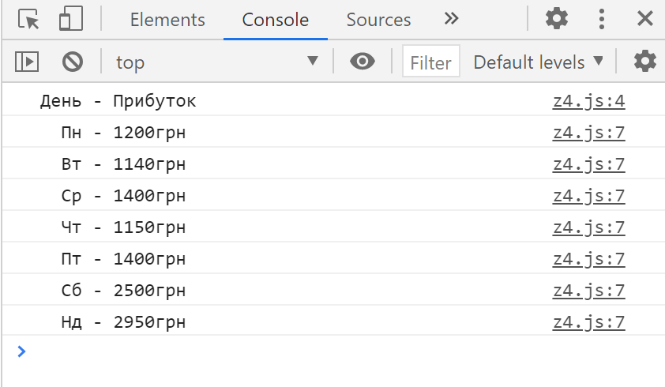
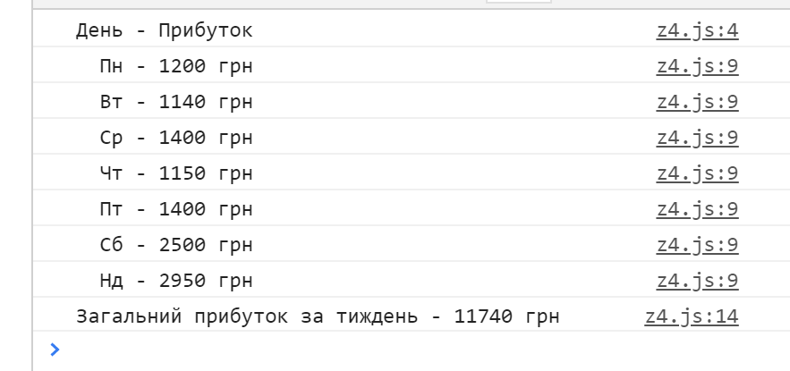
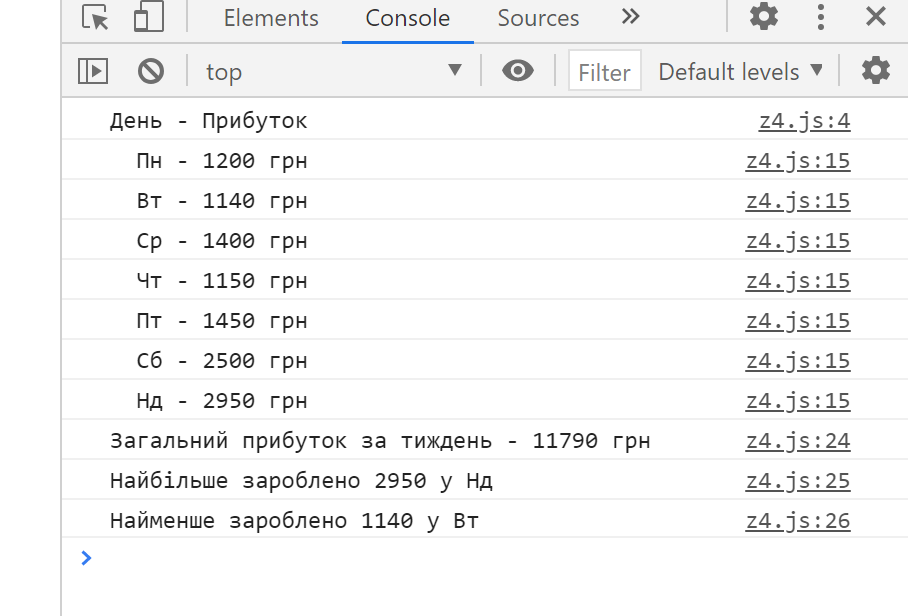

Тема 9. Завдання 4
Створіть програму яка обчислює інфомацію по доходу кафе за тиждень.
Використайте задані масиви для відображення інформацї. arr_1 - дні тижня, а arr_2 відповідно прибуток у цей день:
const arr_1 = ['Пн', 'Вт', 'Ср','Чт', 'Пт', 'Сб', 'Нд']
const arr_2 = [ 1200, 1140, 1400, 1150, 1400, 2500, 2950]
1)

2) Виведіть загальний дохід

2) Виведіть у який день прибуток був найбільший/найменший
